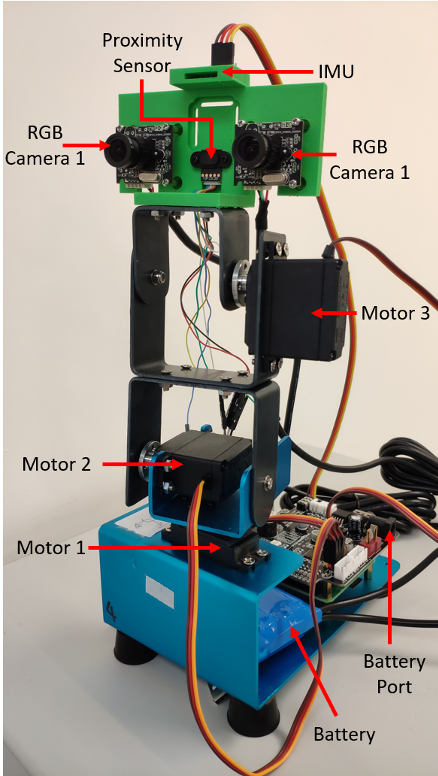
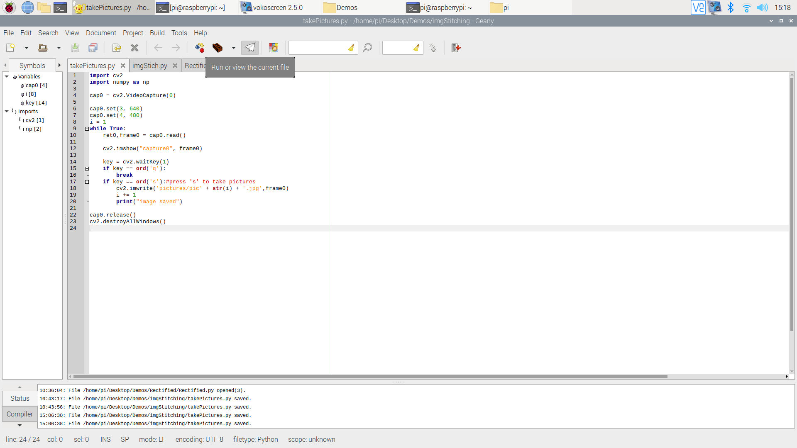
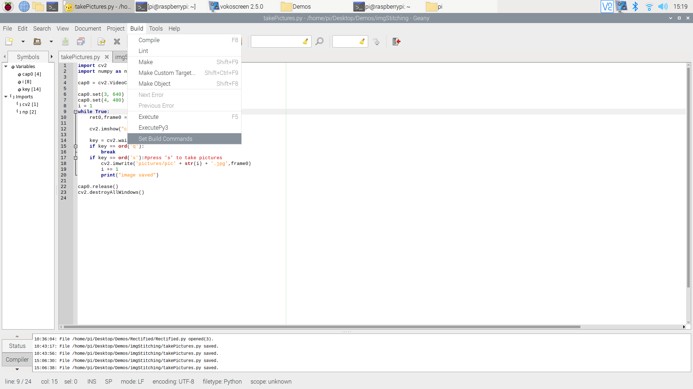
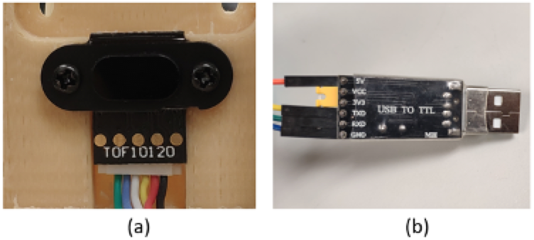
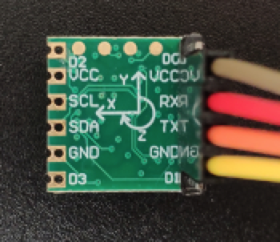

ME41006(Perceptual Robotics) Lab2 Tutorial
ME41006(Perceptual Robotics) Lab2 Tutorial0.Description of the apparatus1.Servomotor basics2.Visual tracking3.Proximity Based Control4.IMU Based Control5. Challenging Question (Bonus Mark)
0.Description of the apparatus
Robotic platform:
Robotic platform Mingo has 3 degrees of freedoms controlled by 3 step motors. It is equipped with 2 RGB cameras, 1 proximity sensor and 1 IMU. Its controller is Raspberry Pi 4B, a strong single board computer which is capable of motor control, image processing and so on. A Unix-like operating system Raspbian is pre-installed in the Raspberry Pi 4B.

All the example codes are in “Demo” folder on Desktop.
Development Environment:
How to run code?
- Open any python codes in Demos folder
- The system will open Geany (Integrated Development Environment, IDE) shown as below:
- 
- you can click the this button in the toolbar or click ->Build -> Execute (F5 is hotkey) in manubar to execute the python code. (The system will run the code with python2 by default. )
- 
1.Servomotor basics
Following the instruction, you will learn how to open an RGB camera, how to read and save a picture, and how a specific color is selected and extracted.
Open “Motor” folder
Practice 1:
- Run "servoMotorControl.py"
- Input an angle (0-180) for the motor, then observe the motion of the robot.
- Press "q" to quit.
Practice 2:
Run "3DOF.py"
Press a key to execute the corresponding action:
- 'w': forward
- 's': backward
- 'a': left
- 'd': right
- 'j': look down
- 'k': look up
- 'l': input an angle to move along a line (51.85-90)
- 'p': control the end effector to move to a certain coordinate
Press "q" to quit.
Video: https://youtu.be/la9pEhw-40Q
2.Visual tracking
In this section, you will learn the basic knowledge about camera calibration, and calibrate two cameras by yourself.
Open “Aruco” folder
- Run "ArucoTracking.py"
- Slowly move the Aruco code to observe the motion of the end effector.
- Video:https://youtu.be/C74oxzyAeV4
3.Proximity Based Control

In this section, you will learn how to use the feedback data from a proximity sensor to control the robot.
Proximity sensors detect the presence of nearby objects without any physical contact. The type of proximity sensor installed on the Mingo platform is a laser rangefinder, also known as a laser telemeter, which uses a laser beam to determine the distance to an object.
Step 1: Check if the proximity sensor is connected to the “USB-TTL” connector. If not, connect them according to the following instructions.

For the proximity sensor, it uses 4 ports to transfer data. From right to left in Figure (a), we denote them by “GND”, “VDD”, “RXD”, and “TXD” (Connected to the black, red, yellow, and white lines in Figure (a)). For the “USB to TTL connector”, it also uses 4 ports to receive data. From up to down in Figure (b), we denote them by “VCC”, “TXD”, “RXD”, and “GND” (Connected to the orange, yellow, green and blue lines in Figure (b)). Connect the proximity sensor and the “USB to TTL connector” ports according to the following correspondence table.
Step 2: Open the “proximity” folder and run “proximity_uart.py” to test the performance of the proximity sensor.
Step 3: Put an object in the front of the proximity sensor, see the printed change of the distance.
Step 4: Run “motor_proximity.py”, put an object in the front of the proximity sensor, and vary its position. See https://youtu.be/1_HURHHNpLM for a video demonstration.
4.IMU Based Control
In this section, you will learn how to use the feedback data from an IMU sensor to control the robot.
IMU measures a body's specific force, angular rate, and sometimes the orientation of the body using a combination of accelerometers, gyroscopes, and sometimes magnetometers. The IMU output the rotation angles of the Mingo’s configuration.
Step 1: Disconnect the proximity sensor and the TTL-USB connector. Connect the IMU to the TTL-USB connector according to the following instructions.

IMU uses 4 ports to transfer data. From up to down in the Figure, we denote them by “VCC”, “RXD”, “TXD”, and “GND”.
Connect IMU and the “USB to TTL connector” ports according to the following correspondence table.
| IMU | USB to TTL Connector |
|---|---|
| GND | GND |
| VCC | VCC |
| RXD | TXD |
| TXD | RXD |
Step 2: Open the “IMU” folder and run “IMU.py” to test the performance of the IMU. Try to rotate the platform in three directions and check the change of the printed result.
Step 3: Run “IMUControl.py”, try to rotate the platform in three directions. See https://youtu.be/ZYXLpKUYYKA for a video demonstration.
5. Challenging Question (Bonus Mark)
Q1 Based on the code of "3DOF.py", create a new code script of executing the robot end effector to move along below paths:
- A square
- A circle
- S-shaped
Requirements:
- Have a window to choose which shape to move
- For each shape, need to input its parameter (side length, radius, etc.)
- Please put your code in a loop
Q2 Please try to write an algorithm which automatically regulates the distance between the end-effector and an object in the front of it to 17 cm.